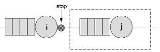
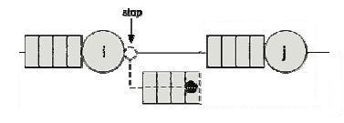
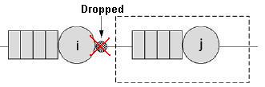

_______________
BAS Blocking (Blocking After Service):
This method is used for station having a finite queue.
When a job arrives to a station with a queue completely filled, it can't be queued immediatly and it will be forced to wait in its origin station. The origin station won't be able to serve other customers since it's still buisy and will be blocked.
In the following figure, the job has just been served from the station i and is routed to station j whose queue capacity is limited and completely filled. This job will wait in station i that is blocked and can't serve other jobs.
The station i is blocked until the queue of station j have a free position for the incoming job.

With this rule, you can have some deadlock in the network, when more stations can be blocked at the same time.
Waiting Queue(no drop):
The job that has just been served from the station i is rooted to a temporary queue waiting that station j can accept it.
This method doesn't block station i.

Drop:
The job that can't be served by station j whose queue capacity is limited and completely filled, is eliminated (dropped) from the model.
This method doesn't block station i.
